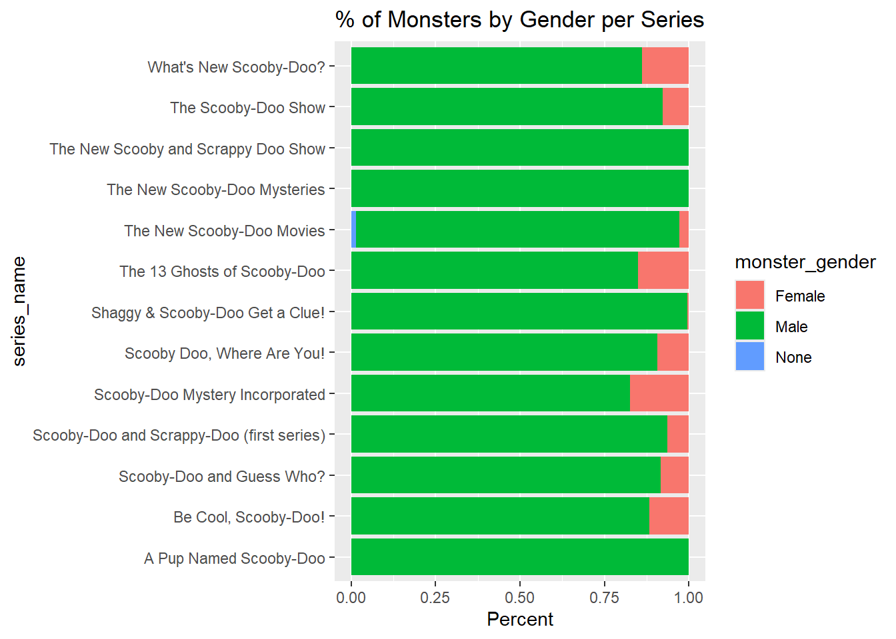
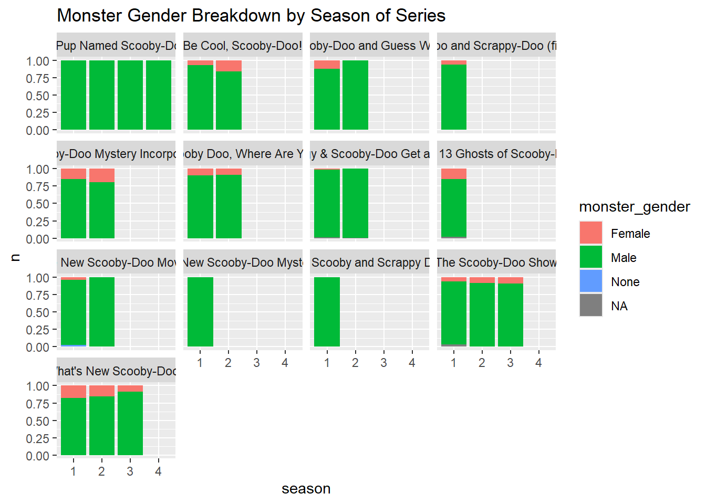
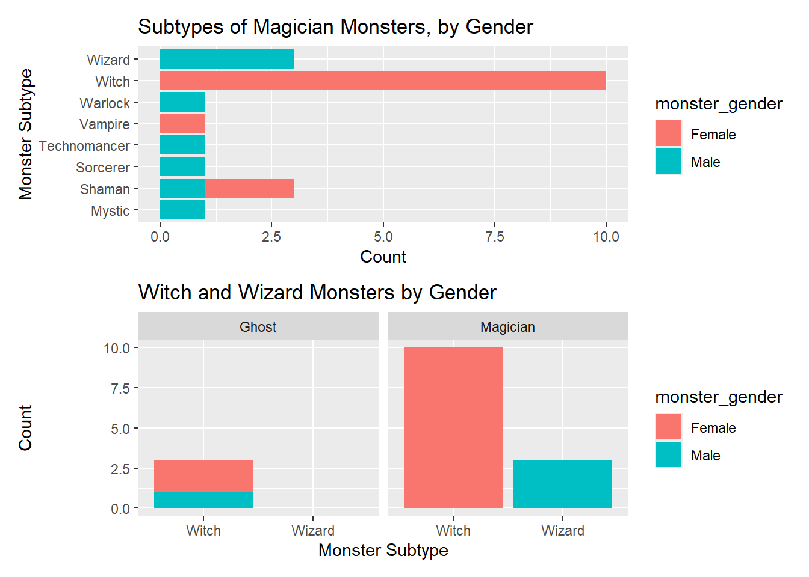

# load data and packageslibrary(tidyverse)library(tidytuesdayR)library(patchwork)
Warning: package 'patchwork' was built under R version 4.4.3
tuesdata <- tidytuesdayR::tt_load(2021, week =29)
---- Compiling #TidyTuesday Information for 2021-07-13 ----
--- There is 1 file available ---
── Downloading files ───────────────────────────────────────────────────────────
1 of 1: "scoobydoo.csv"
scoobydoo <- tuesdata$scoobydoo
# number of monsters in each episodescoobydoo |>filter(monster_amount >16) |>select(title, contains("monster"))
# what are the most common monster types, names from TV episodes?scoobydoo_clean |>group_by(monster_type) |>mutate(n=n()) |>filter(n >5) |>mutate(monster_type =fct_reorder(monster_type, n)) |>ggplot(aes(y = series_name, fill = monster_type))+geom_bar(position ="fill")+labs(title ="Most Common Monster Types by series")+theme(legend.position ="bottom")
# are monsters real or not?ggplot(scoobydoo_clean, aes(x=monster_real, fill = monster_type))+geom_bar(color ="white", position ="fill")+labs(title ="Monster Type by Real/Not Real Status")
# monster gendersscoobydoo_clean |>filter(!is.na(monster_gender)) |>group_by(monster_gender) |>mutate(n =n()) |>ggplot(aes(y = series_name, fill = monster_gender)) +geom_bar(position ="fill")+labs(x ="Percent",title ="% of Monsters by Gender per Series")

# monster genders over timescoobydoo_clean |>left_join(scoobydoo) |>select(monster_gender, title, season, series_name, date_aired) |>mutate(year =as.character(year(date_aired))) |>group_by(year, monster_gender) |>summarize(n =n()) |>na.omit() |>ggplot(aes(y = year, x = n, fill = monster_gender))+geom_col(position ="fill")+labs(title ="Monster Gender Percentages by Year")
Joining with `by = join_by(title, season, series_name, monster_real,
monster_amount, monster_name, monster_gender, monster_type, monster_subtype,
monster_species)`
`summarise()` has grouped output by 'year'. You can override using the
`.groups` argument.
# monster gender by seasonsscoobydoo_clean |>count(monster_gender, series_name, season) |>ggplot(aes(x = season, y = n, fill = monster_gender))+geom_col(position ="fill")+facet_wrap(~series_name)+labs(title ="Monster Gender Breakdown by Season of Series")

p1 <- scoobydoo_clean |>filter(monster_gender =="Male") |>count(monster_name) |>filter(n >3) |>mutate(monster_name =fct_reorder(monster_name, n)) |>ggplot(aes(y = monster_name, x = n))+geom_col()+labs(title ="Monster Names by Gender in Scooby-Doo TV Episodes",subtitle ="Male Monsters (n >3)",x ="Number of Occurences", y ="Monster Name")+theme(plot.title=element_text(face="bold", size=15))p2 <- scoobydoo_clean |>filter(monster_gender =="Female") |>count(monster_name) |>mutate(monster_name = (fct_reorder(monster_name, n))) |>ggplot(aes(y= monster_name, x = n))+geom_col()+labs(subtitle ="Female Monsters",x="Number of Occurences", y ="")p1 | p2
# A tibble: 425 × 2
monster_name n
<chr> <int>
1 Dr. Phineus Phibes 26
2 Agent 2 22
3 Dr. Trebla 20
4 Agent 1 19
5 Agent 4 12
6 Mark 12
7 Ricky 12
8 Agent 13 10
9 Zombies 10
10 Agent 3 9
# ℹ 415 more rows
p1<- scoobydoo_clean |>filter(monster_type =="Magician") |>ggplot(aes(y=monster_subtype, fill = monster_gender))+geom_bar()+labs(title ="Subtypes of Magician Monsters, by Gender",x ="Count", y ="Monster Subtype")p2 <- scoobydoo_clean |>filter(monster_subtype %in%c("Witch", "Wizard")) |>ggplot(aes(x=monster_subtype, fill = monster_gender))+geom_bar()+labs(title ="Witch and Wizard Monsters by Gender",x ="Monster Subtype", y ="Count")+facet_wrap(~monster_type)p1 / p2

scoobydoo_clean |>ggplot(aes(y=monster_type, fill = monster_gender))+geom_bar(position ="fill")
# do female monsters appear alone or with groups of monsters?scoobydoo_clean |>filter(monster_gender %in%c("Male", "Female")) |>mutate(monster_amount =ifelse(monster_amount >=10, "10+",as.character(monster_amount))) |>mutate(monster_amount =fct_relevel(monster_amount, c("1", "2", "3", "4", "5", "6","7","8","9","10+"))) |>ggplot(aes(x=monster_gender, fill = monster_amount))+geom_bar(position ="fill", color ="white") +labs(title ="Monster Amount by Gender (%)")
# when there are 2 monsters, is it 2 female or 1 male and 1 female?scoobydoo_clean |>filter(monster_amount ==2) |>select(title, monster_num, monster_gender) |>group_by(title, monster_num) |>summarize(monster_gender =first(monster_gender)) |>pivot_wider(names_from = monster_num, values_from = monster_gender) |>mutate(genders =paste(`1`,`2`, sep ="_")) |>mutate(genders =str_replace(genders, "Female_Male","Male_Female")) |>ggplot(aes(x=genders))+geom_bar()
`summarise()` has grouped output by 'title'. You can override using the
`.groups` argument.
Warning in left_join(scoobydoo_clean, select(scoobydoo, title, run_time)): Detected an unexpected many-to-many relationship between `x` and `y`.
ℹ Row 273 of `x` matches multiple rows in `y`.
ℹ Row 11 of `y` matches multiple rows in `x`.
ℹ If a many-to-many relationship is expected, set `relationship =
"many-to-many"` to silence this warning.
# A tibble: 13 × 2
series_name `mean(run_time)`
<chr> <dbl>
1 A Pup Named Scooby-Doo 22.9
2 Be Cool, Scooby-Doo! 21.7
3 Scooby Doo, Where Are You! 21.1
4 Scooby-Doo Mystery Incorporated 22.4
5 Scooby-Doo and Guess Who? 22.4
6 Scooby-Doo and Scrappy-Doo (first series) 21
7 Shaggy & Scooby-Doo Get a Clue! 22.7
8 The 13 Ghosts of Scooby-Doo 24
9 The New Scooby and Scrappy Doo Show 23
10 The New Scooby-Doo Movies 42.6
11 The New Scooby-Doo Mysteries 23
12 The Scooby-Doo Show 23.6
13 What's New Scooby-Doo? 21.0
# A tibble: 29 × 2
series_name n
<chr> <int>
1 Scooby-Doo and Scrappy-Doo (second series) 86
2 Be Cool, Scooby-Doo! 53
3 Scooby-Doo Mystery Incorporated 52
4 Laff-a-Lympics 48
5 Warner Home Video 42
6 What's New Scooby-Doo? 42
7 Scooby-Doo and Guess Who? 41
8 The Scooby-Doo Show 40
9 A Pup Named Scooby-Doo 30
10 Shaggy & Scooby-Doo Get a Clue! 26
# ℹ 19 more rows
scoobydoo |>group_by(season) |>summarize(n =n())
# A tibble: 7 × 2
season n
<chr> <int>
1 1 311
2 2 164
3 3 60
4 4 5
5 Crossover 8
6 Movie 42
7 Special 13
scoobydoo |>group_by(format) |>summarize(n =n())
# A tibble: 5 × 2
format n
<chr> <int>
1 Crossover 8
2 Movie 43
3 Movie (Theatrical) 3
4 TV Series 374
5 TV Series (segmented) 175
# so we should probably focus on tv episodes and not movies?
# filter to be just seasonsscoobydoo_tv <- scoobydoo |>filter(season %in%c("1", "2", "3", "4"))scoobydoo_tv |>group_by(season) |>summarize(n =n())
# A tibble: 4 × 2
season n
<chr> <int>
1 1 311
2 2 164
3 3 60
4 4 5
# i'm not well-versed enough on scoobydoo...why does season 4 only have 5 episodes?scoobydoo_tv |>filter(season =="4")
# A tibble: 5 × 75
index series_name network season title imdb engagement date_aired run_time
<dbl> <chr> <chr> <chr> <chr> <chr> <chr> <date> <dbl>
1 329 A Pup Named S… ABC 4 The … 7.2 40 1991-08-03 23
2 330 A Pup Named S… ABC 4 Catc… 6.6 37 1991-08-10 4
3 331 A Pup Named S… ABC 4 The … 6.6 37 1991-08-10 11
4 332 A Pup Named S… ABC 4 The … 6.6 37 1991-08-10 8
5 333 A Pup Named S… ABC 4 Mayh… 7.2 32 1991-08-17 23
# ℹ 66 more variables: format <chr>, monster_name <chr>, monster_gender <chr>,
# monster_type <chr>, monster_subtype <chr>, monster_species <chr>,
# monster_real <chr>, monster_amount <dbl>, caught_fred <chr>,
# caught_daphnie <chr>, caught_velma <chr>, caught_shaggy <chr>,
# caught_scooby <chr>, captured_fred <chr>, captured_daphnie <chr>,
# captured_velma <chr>, captured_shaggy <chr>, captured_scooby <chr>,
# unmask_fred <chr>, unmask_daphnie <chr>, unmask_velma <chr>, …
scooby_snacks |>mutate(number_of_snacks =str_sub(number_of_snacks, start =0, end =1)) |>filter(number_of_snacks !="a", number_of_snacks !="l", number_of_snacks !="N", number_of_snacks !="s", number_of_snacks !="t") |>group_by(series_name) |>mutate(total_snacks =sum(as.numeric(number_of_snacks))) |># fix these numbersmutate(n_episodes =n()) |>ggplot(aes(x=total_snacks, y =series_name))+geom_col()+geom_label(aes(label = n_episodes, x =10))+labs(title ="Number of Snacks Eaten in each series",subtitle ="number of episodes displayed at the right")
scoobydoo_clean |>left_join(scoobydoo_tv) |>select(title, series_name, season, motive, monster_gender, monster_name, culprit_gender, culprit_name) |>group_by(motive, monster_gender) |>summarize(n =n()) |>na.omit() |>filter(motive !="NULL") |>ggplot(aes(x = monster_gender, y = n, fill = motive))+geom_col(color ="white", position ="fill")
Joining with `by = join_by(title, season, series_name, monster_real,
monster_amount, monster_name, monster_gender, monster_type, monster_subtype,
monster_species)`
`summarise()` has grouped output by 'motive'. You can override using the
`.groups` argument.
ggplot(scoobydoo_culprit, aes(y=series_name, fill = culprit_gender)) +geom_bar(position ="fill")
scoobydoo_culprit |>count(culprit_gender)
# A tibble: 2 × 2
culprit_gender n
<chr> <int>
1 Female 101
2 Male 332
# gender of plants???scoobydoo_clean |>filter(monster_type =="Plant") |>select(monster_type, monster_name, monster_gender)
# A tibble: 10 × 3
monster_type monster_name monster_gender
<chr> <chr> <chr>
1 Plant Cactus None
2 Plant Kelp Monster Male
3 Plant Evil Tree Male
4 Plant Evil Tree Male
5 Plant Living Plants Male
6 Plant Stinkweed Male
7 Plant Coral Creature Male
8 Plant Swamp Monster Male
9 Plant Plant Monster Male
10 Plant Gnarled One Male
scoobydoo_clean |>ggplot(aes(x=monster_real, fill = monster_type))+geom_bar()